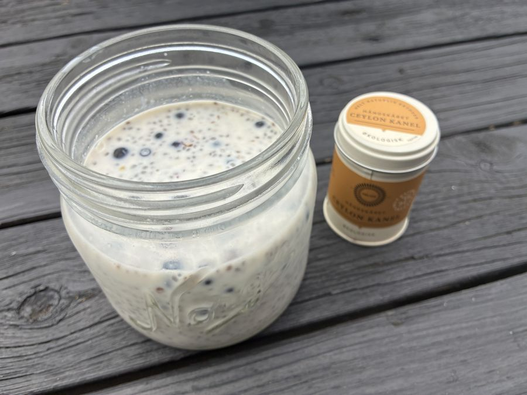
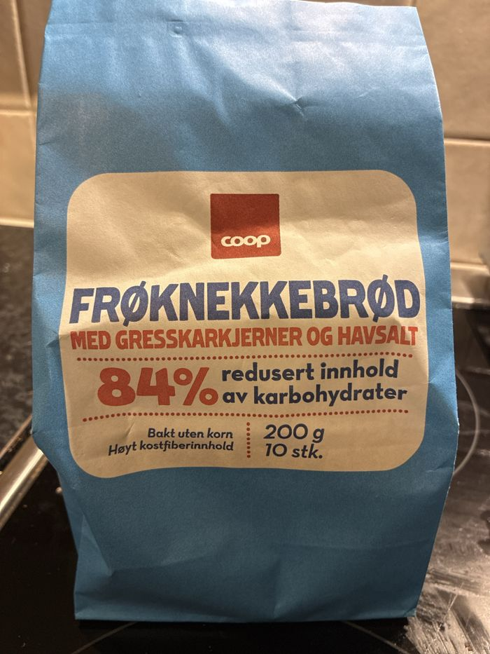

Kosthold
Små bytter, uten å legge om alt
Lavkarbo trenger ikke bety strenge regler, veiing av mat eller at pasta og poteter aldri kan spises igjen.
For mange kan det være mer realistisk å starte med ett eller to små bytter og kjenne etter hvordan det fungerer. Kanskje du ønsker å spise mindre brød, pasta, ris og sukker, få inn mer grønnsaker og protein, eller finne måltider som holder deg mett lenger.
Fokuset her er ikke at karbohydrater i seg selv er noe du bør unngå, men mindre sukker og raffinerte karbohydrater, og mer grønnsaker, protein, fiber og mat som metter.
Her er noen enkle forslag du kan teste.
Min favoritt til hverdags
Kjøleskapsgrøt med chia og blåbær spiser jeg selv hver morgen på hverdagene. Den tar to minutter å lage kvelden før, står klar når du står opp, og er full av fiber, omega-3 og protein. En kjempegod start på dagen!
Andre gode alternativer:
2 egg, ½ avokado og tomat, agurk eller paprika. Eventuelt ett frøknekkebrød ved siden av.
1–2 frøknekkebrød med for eksempel egg, ost, cottage cheese, røkelaks eller avokado. Legg gjerne til litt grønt.
Cottage cheese eller naturell gresk yoghurt med noen bær, valnøtter og chia- eller linfrø.
Egg med rester av grønnsaker, sopp, spinat, paprika og litt ost. En fin måte å bruke det du allerede har i kjøleskapet.

En god og mettende start på dagen, som tar to minutter å lage kvelden før. Grøten er full av fiber og gode fettsyrer, og holder deg mett lenge.
Blir grøten for tykk, rører du inn en skvett drikke til. Du kan gjerne lage 2–3 glass på en gang. De holder seg fint i kjøleskapet i 2–3 dager.
Mye fiber: Chiafrø, linfrø og loppefrøskall gir til sammen rundt 15 g kostfiber, altså omtrent halvparten av det du trenger på en hel dag. Fiber gir god metthet, en jevnere blodsukkerkurve og er bra for fordøyelsen og tarmfloraen.
Loppefrøskall består nesten bare av løselig fiber: 1 ss (ca. 4 g) gir rundt 3,5 g kostfiber. Fiberen danner en gel som gjør grøten tykk, bidrar til en normal tarmfunksjon og kan bidra til å holde kolesterolnivået i blodet normalt.
Plantebasert omega-3: Chiafrø og linfrø er blant de rikeste kildene til plantebasert omega-3 (alfa-linolensyre). En porsjon gir rundt 5–6 g, mer enn det anbefalte daglige inntaket. Linfrøene bør være knuste, ellers passerer de ofte ufordøyd gjennom tarmen.
Protein: Proteinyoghurten og frøene gir rundt 13–14 g protein. Vil du ha enda mer, kan du øke mengden yoghurt.
Blåbær og kanel gir smak, farge og antioksidanter. Ceylon-kanel inneholder mye mindre kumarin enn vanlig kassiakanel, og passer derfor godt når du bruker kanel hver dag.
| Med mandeldrikk (usøtet) | Med havredrikk | |
|---|---|---|
| Energi | ca. 270 kcal | ca. 350 kcal |
| Karbohydrat | ca. 8 g | ca. 25 g |
| Kostfiber | ca. 16 g | ca. 17 g |
| Protein | ca. 13 g | ca. 14 g |
| Fett | ca. 15 g | ca. 16 g |
| – hvorav omega-3 | ca. 5–6 g | ca. 5–6 g |
Valget av drikk utgjør den største forskjellen. Havredrikk inneholder naturlig sukker fra havren, rundt 15–17 g karbohydrater i 2,5 dl. Usøtet mandeldrikk har nesten ingen karbohydrater. Vil du spise mindre karbohydrater, kan du bruke usøtet mandeldrikk eller en blanding av de to.
Tallene er anslag basert på 2,5 ss chiafrø, 1 ss linfrø, 1 ss loppefrøskall, 3,5 ss proteinyoghurt (vanilje), 2,5 dl drikk og 2,5 ss blåbær, og varierer med produktene du bruker. Har du ikke spist så mye fiber før, kan det være lurt å starte med litt mindre loppefrø og chia, og å drikke godt med vann gjennom dagen.
Bruker du medisiner? Loppefrøskall kan påvirke opptaket av medisiner og kosttilskudd. Ta dem derfor med minst 2 timers avstand fra grøten, eller snakk med lege eller apotek. Produsenten anbefaler ikke loppefrøskall som kosttilskudd til gravide eller barn under 11 år. Følg rådene på pakningen du bruker.

Et godt frøknekkebrød er et enkelt bytte som gjør stor forskjell. Dette er bakt uten korn, hovedsakelig av frø og egg, og har svært lite karbohydrater, men mye fiber og protein.
| Per 100 g | Per stk. (ca. 20 g) | |
|---|---|---|
| Karbohydrat | 5,2 g | ca. 1 g |
| – hvorav sukker | 1,1 g | ca. 0,2 g |
| Kostfiber | 18 g | ca. 3,6 g |
| Protein | 22 g | ca. 4,4 g |
| Fett | 35 g | ca. 7 g |
| Energi | 452 kcal | ca. 90 kcal |
Lite karbohydrater: Ett knekkebrød har rundt 1 g karbohydrater. Til sammenligning har en vanlig skive grovbrød gjerne 15–20 g. Det gir en jevnere blodsukkerkurve etter måltidet.
Mye fiber: Med rundt 3,6 g kostfiber per knekkebrød får du et godt bidrag mot anbefalingen på minst 25–35 g fiber om dagen. Fiber er bra for fordøyelsen og tarmfloraen, og bidrar til metthet.
Protein og gode fettsyrer: Frø og egg gir protein og hovedsakelig umettet fett. Sammen med fiberen gjør dette at du holder deg mett lenger.
Frøknekkebrød er ganske energitett, så 1–2 stykker per måltid er en fin mengde. Det finnes mange lignende produkter: se etter frøknekkebrød med lite karbohydrater og mye fiber på næringsdeklarasjonen. Tallene over er hentet fra pakningen.
Tenk enkelt:
Protein + mye grønnsaker + en fettkilde + eventuelt litt av det vanlige tilbehøret
Middagens faste tilbehør
Grønnsaksmos av brokkoli, blomkål og sellerirot er et av de enkleste og mest allsidige byttene du kan gjøre. Den passer til fisk, kjøttkaker, kylling og gryteretter, og kan erstatte hele eller deler av potetene, risen eller pastaen.
Lag dobbel porsjon på søndag, så har du tilbehør til to middager i uka. Se oppskriften ↓
Lag den samme kjøttsausen som resten av familien spiser. Bytt ut hele eller deler av pastaen med squashstrimler, strimlet kål eller andre grønnsaker. Du trenger altså ikke lage to middager.
Laks, ørret eller torsk med grønnsaksmos, brokkoli, blomkål, grønne bønner eller andre grønnsaker. Tilsett litt olivenolje, saus eller annet tilbehør du liker.
Lag vanlig taco til familien. Prøv selv en tacosalat eller bolle med kjøttdeig eller kylling, salat, tomat, paprika, avokado, salsa, ost og litt rømme. Du kan også bare spise færre lefser enn vanlig.
Kylling, kjøttkaker eller annet kjøtt sammen med en stor porsjon grønnsaker. Prøv grønnsaksmos, ovnsbakte grønnsaker eller salat i stedet for, eller sammen med en mindre porsjon, ris eller poteter.
Et godt alternativ til potetmos, ris eller pasta, som passer til de fleste middagsretter: fisk, kjøttkaker, kylling, kjøtt i saus og gryteretter. Lag gjerne dobbel porsjon med en gang, så har du tilbehør til to middager.
Merk: 2 buljongterninger holder også til dobbel porsjon. Smak heller til med mer på slutten om du trenger det.
Omtrentlig næringsinnhold for hele den doble porsjonen (ca. 500 g), fordelt på 4 porsjoner à ca. 125 g (for eksempel 2 middager for 2 personer):
| Per porsjon (125 g) | Per 100 g | |
|---|---|---|
| Energi | ca. 120 kcal | ca. 95 kcal |
| Karbohydrat | ca. 6 g | ca. 5 g |
| Kostfiber | ca. 4 g | ca. 3 g |
| Protein | ca. 4 g | ca. 3 g |
| Fett | ca. 8 g | ca. 6 g |
Til sammenligning har en tilsvarende porsjon potetmos eller kokte poteter rundt 18–20 g karbohydrater, altså omtrent tre ganger så mye. Grønnsaksmosen gir i tillegg mer fiber, og brokkoli og blomkål er gode kilder til vitamin C, folat og vitamin K.
Fettet kommer i hovedsak fra crème fraîche og smør. Det gjør mosen god og mettende. Vil du ha den lettere, kan du bruke lett crème fraîche eller litt mindre.
Salt: Buljongterninger inneholder mye salt. Med 2 terninger i en dobbel porsjon blir det rundt 2 g salt per porsjon, mens anbefalingen er maks 5 g salt om dagen. Velg gjerne buljong med redusert saltinnhold, eller bruk hjemmelaget buljong.
Tallene er anslag basert på vanlige næringsverdier for råvarene (blant annet Matvaretabellen), med crème fraîche 35 % og 10 g smør. De varierer med produktene du bruker.
Mosen holder seg 3–4 dager i kjøleskapet i en tett boks. Varm den opp i kjele eller mikro, og rør gjerne inn en skvett vann eller en klatt crème fraîche om den har blitt litt tykk.
Bruk oppskriften som et utgangspunkt og varier etter hva du har og hva du skal servere den til:
Med egg, cottage cheese, ost, røkelaks eller annet mettende pålegg.
Med litt bær, frø eller noen valnøtter.
Et kokt egg eller en liten omelett med grønnsaker kan være en enkel og mettende kveldsmat.
Det skal også være plass til noe godt. En liten neve valnøtter og 20–30 g mørk sjokolade (70 % kakao eller mer) kan være et fint alternativ når du ønsker litt kos på kvelden.
Hvorfor valnøtter? Valnøtter er en av de mest næringsrike nøttene. De inneholder mer plantebasert omega-3 (alfa-linolensyre) enn andre nøtter, i tillegg til fiber, magnesium og antioksidanter. Fett, fiber og protein gjør også at de metter godt. Studier viser at et jevnlig inntak av valnøtter kan senke LDL-kolesterolet (det «dårlige» kolesterolet), og nøtter generelt er knyttet til lavere risiko for hjerte- og karsykdom. En liten neve (rundt 30 g) om dagen er en fin mengde.
Og den mørke sjokoladen? Mørk sjokolade har mindre sukker enn melkesjokolade, og kakao inneholder plantestoffer (flavanoler) som i studier har vist små, gunstige effekter på blant annet blodtrykk og blodårenes funksjon. I små mengder kan mørk sjokolade derfor være et godt valg når du vil ha noe søtt. Den er likevel først og fremst kos, og det er nettopp den lille porsjonen som gjør den til et godt valg.
Vanlig brus er en av de største kildene til sukker i kostholdet. En halvliter inneholder rundt 50 g sukker, omtrent like mye som 12 sukkerbiter. Flytende sukker metter heller ikke, så det kommer lett i tillegg til det du spiser. Juice og saft inneholder også mye sukker.
Gode alternativer når du har lyst på noe godt å drikke:
Tips: Server det i et fint glass med is og en skive sitron. Det gjør overraskende mye for kosfølelsen.
Poenget er ikke at du aldri skal spise andre søtsaker, men at du kan finne alternativer du liker og som gjør det lettere å redusere mengden sukker i hverdagen. Planlagt kos er noe helt annet enn forbud.
Du trenger ikke gjøre alt samtidig. Velg ett eller to bytter du vil teste de neste 1–2 ukene:
Avkryssingen lagres bare i din egen nettleser.
Et lite bytte som fungerer i hverdagen er ofte mer verdifullt enn en stor endring som varer i én uke.
Da er ikke løsningen nødvendigvis å «ta seg sammen». Vær heller litt nysgjerrig:
Målet er ikke å bruke mest mulig viljestyrke, men å finne måltider og vaner som gjør det lettere å ta de valgene du selv ønsker.
Det beste kostholdet er ofte det du faktisk klarer å leve med over tid.
Denne artikkelen er skrevet som generell helseinformasjon og inspirasjon, og er ikke en behandlingsplan. Bruker du blodsukkersenkende medisiner (for eksempel insulin eller sulfonylurea), er gravid eller ammer, har nyresykdom eller har, eller har hatt, en spiseforstyrrelse, bør du snakke med lege før du gjør større endringer i karbohydratinntaket.